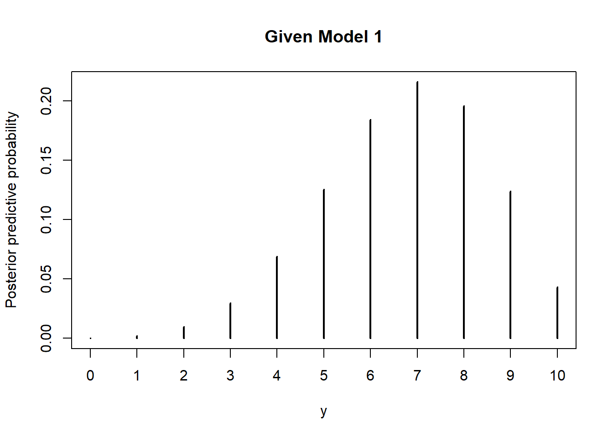
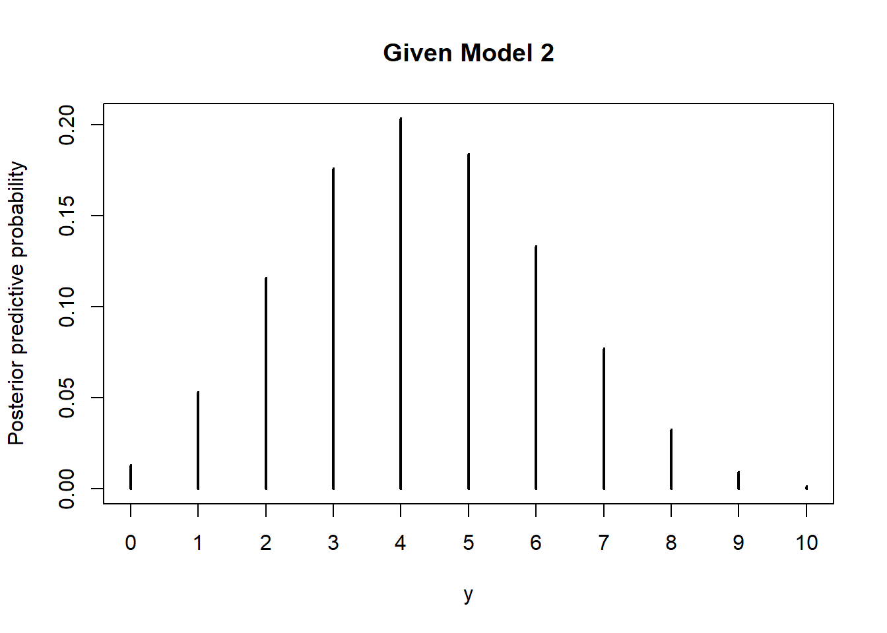
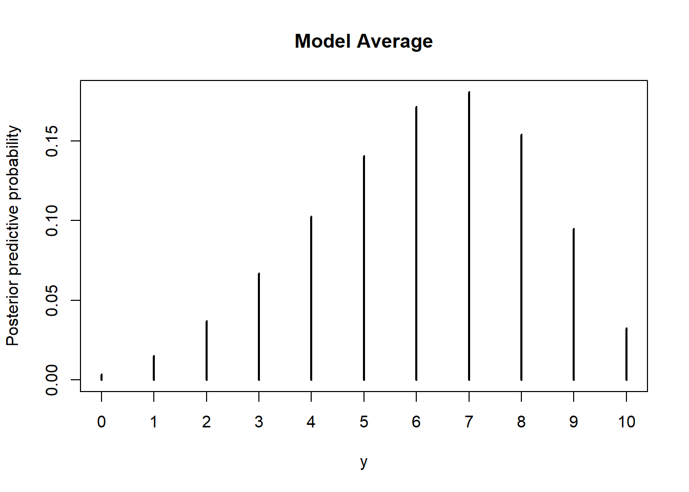

| hypothesis | prior | likelihood | product | posterior |
|---|---|---|---|---|
| Carries HIV | 0.005 | 0.9770 | 0.0049 | 0.0622 |
| Does not carry HIV | 0.995 | 0.0740 | 0.0736 | 0.9378 |
| sum | 1.000 | NA | 0.0785 | 1.0000 |
| ratio | 0.005 | 13.2027 | 0.0663 | 0.0663 |
25 Introduction to Bayesian Model Comparison
- A Bayesian model is composed of both a model for the data (likelihood) and a prior distribution on model parameters
- Model selection usually refers to comparing different models1 for the data (likelihoods); for example, selecting which predictors to include in a regression or classification model, selecting between Normal or \(t\) error distribution, comparing a hierarchical model to a pooled model, etc.
- But model selection can also concern choosing between models with the same likelihood but different priors.
- In Bayesian model comparison, prior probabilities are assigned to each of the models, and these probabilities are updated given the data according to Bayes rule.
25.1 Odds and Bayes factors
- The odds of an event is a ratio involving the probability that the event occurs and the probability that the event does not occur \[ \text{odds}(A) = \frac{P(A)}{P(A^c)} = \frac{P(A)}{1-P(A)} \]
- In many situations (e.g., gambling) odds are reported as odds against \(A\), that is, the odds of \(A^c\): \(P(A^c)/P(A)\).
- The probability of an event can be obtained from odds \[ P(A) = \frac{\text{odds}(A)}{1+\text{odds}(A)} \]
Example 25.1 The ELISA test for HIV was widely used in the mid-1990s for screening blood donations. As with most medical diagnostic tests, the ELISA test is not perfect. If a person actually carries the HIV virus, experts estimate that this test gives a positive result 97.7% of the time. (This number is called the sensitivity of the test.) If a person does not carry the HIV virus, ELISA gives a negative (correct) result 92.6% of the time (the specificity of the test). Estimates at the time were that 0.5% of the American public carried the HIV virus (the base rate).
Calculate the prior odds of a randomly selected American having the HIV virus, before taking an ELISA test.
Suppose that a randomly selected American tests positive. Compute the posterior probability that the person actually carries the virus. (Why is this probability so small?)
Calculate the posterior odds of a randomly selected American having the HIV virus, given a positive test result.
By what factor has the odds of carrying HIV increased, given a positive test result, as compared to before the test? This is called the Bayes factor.
Suppose you were given the prior odds and the Bayes factor. How could you compute the posterior odds?
Compute the ratio of the likelihoods of testing positive, for those who carry HIV and for those who do not carry HIV. What do you notice?
- The Bayes factor (BF) in favor of hypothesis \(H\) given evidence \(E\) is defined to be the ratio of the posterior odds to the prior odds \[ BF = \frac{\text{posterior odds}}{\text{prior odds}} = \frac{P(H|E)/P(H^c|E)}{P(H)/P(H^c)} \]
- The Bayes factor in favor of hypothesis \(H\) given evidence \(E\) can be calculated as the ratio of the likelihoods \[ BF = \frac{P(E|H)}{P(E|H^c)} \]
- Odds form of Bayes rule \[\begin{align*} \frac{P(H|E)}{P(H^c|E)} & = \frac{P(H)}{P(H^c)} \times \frac{P(E|H)}{P(E|H^c)} \\ \text{posterior odds} & = \text{prior odds} \times \text{Bayes factor} \end{align*}\]
25.2 Posterior probability of models
Example 25.2 Suppose I have some trick coins2, some of which are biased in favor of landing on heads, and some of which are biased in favor of landing on tails. I will select a trick coin at random; let \(\theta\) be the probability that the selected coin lands on heads in any single flip. I will flip the coin \(n\) times and use the data to decide about the direction of its bias. This can be viewed as a choice between two models
- Model 1: the coin is biased in favor of landing on heads
- Model 2: the coin is biased in favor of landing on tails
Assume that in model 1 the prior distribution for \(\theta\) is Beta(7.5, 2.5). Suppose in \(n=10\) flips there are 6 heads. Use simulation to approximate the probability of observing 6 heads in 10 flips given that model 1 is correct.
Assume that in model 2 the prior distribution for \(\theta\) is Beta(2.5, 7.5). Suppose in \(n=10\) flips there are 6 heads. Use simulation to approximate the probability of observing 6 heads in 10 flips given that model 2 is correct.
Suppose I flip the coin 10 times and 6 of the flips land on heads. Use the simulation results to approximate and interpret the Bayes Factor in favor of model 1 given 6 heads in 10 flips.
Suppose our prior probability for each model was 0.5. Find the posterior probability of each model given 6 heads in 10 flips.
Suppose I know I have a lot more tail biased coins, so my prior probability for model 1 was 0.1. Find the posterior probability of each model given 6 heads in 10 flips.
25.3 Model averaging
Example 25.3 Continuing Example 25.2. Now suppose I want to predict the number of heads in the next 10 flips of the selected coin, given that there were 6 heads in the first 10 flips.
Use simulation to approximate the posterior predictive distribution of the number of heads in the next 10 flips given 6 heads in the first 10 flips given that model 1 is the correct model. In particular, approximate the posterior predictive probability that there are 7 heads in the next 10 flips given then model 1 is the correct model.
Use simulation to approximate the posterior predictive distribution of the number of heads in the next 10 flips given 6 heads in the first 10 flips given that model 2 is the correct model. In particular, approximate the posterior predictive probability that there are 7 heads in the next 10 flips given then model 2 is the correct model.
Suppose our prior probability for each model was 0.5. Use simulation to approximate the posterior predictive distribution of the number of heads in the next 10 flips given 6 heads in the first 10 flips. In particular, approximate the posterior predictive probability that there are 7 heads in the next 10 flips.
- Bayesian model comparison can be viewed as Bayesian estimation in a hierarchical model with an extra level for “model”.
- In Bayesian model comparison, prior probabilities are assigned to each of the models, and these probabilities are updated given the data according to Bayes rule.
- When several models are under consideration, the Bayesian model is the full hierarchical structure which spans all models being compared.
- Thus, the most complete posterior prediction takes into account all models, weighted by their posterior probabilities.
- That is, prediction is accomplished by taking a weighted average across the models, with weights equal to the posterior probabilities of the models. This is called model averaging.
25.4 Accounting for model complexity
Example 25.4 Suppose again I select a coin, with probability of heads \(\theta\), but now the decision is whether the coin is fair. Suppose we consider the two models
- “Must be fair” model: prior distribution for \(\theta\) is Beta(500, 500)
- “Anything is possible” model: prior distribution for \(\theta\) is Beta(1, 1)
Suppose we observe 15 heads in 20 flips. Use simulation to approximate the Bayes factor in favor of the “must be fair” model given 15 heads in 20 flips. Which model does the Bayes factor favor?
Suppose we observe 11 heads in 20 flips. Use simulation to approximate the Bayes factor in favor of the “must be fair” model given 11 heads in 20 flips. Which model does the Bayes factor favor?
The “anything is possible” model has any value available to it, including 0.5 and the sample proportion 0.55. Why then is the “must be fair” option favored in the previous part?
- Complex models generally have an inherent advantage over simpler models because complex models have many more options available, and one of those options is likely to fit the data better than any of the fewer options in the simpler model.
- However, we don’t always want to just choose the more complex model. Always choosing the more complex model overfits the data.
- Bayesian model comparison naturally compensates for discrepancies in model complexity.
- In more complex models, prior probabilities are diluted over the many options available.
- The numerator and denominator in the Bayes factor are average likelihoods: the likelihood of the data averaged over each possible value of \(\theta\).
- Even if a complex model has some particular combination of parameters that fit the data well, the prior probability of that particular combination is likely to be small because the prior is spread more thinly than for a simpler model, which pulls down the average likelihood of the complex model.
- Thus, in Bayesian model comparison, a simpler model can “win” if the data are consistent with it, even if the complex model fits well.
25.5 Sensitivity of model comparison to prior
Example 25.5 Continuing Example 25.5 where we considered the two models
- “Must be fair” model: prior distribution for \(\theta\) is Beta(500, 500)
- “Anything is possible” model: prior distribution for \(\theta\) is Beta(1, 1)
Suppose we observe 65 heads in 100 flips.
Use simulation to approximate the Bayes factor in favor of the “must be fair” model given 65 heads in 100 flips. Which model does the Bayes factor favor?
We have discussed different notions of a “non-informative/vague” prior. We often think of Beta(1, 1) = Uniform(0, 1) as a non-informative prior, but there are other considerations. In particular, a Beta(0.01, 0.01) is often used a non-informative prior in this context. Think of a Beta(0.01, 0.01) prior like an approximation to the improper Beta(0, 0) prior based on “no prior successes or failures”. Suppose now that the “anything is possible” model corresponds to a Beta(0.01, 0.01) prior distribution for \(\theta\). Use simulation to approximate the Bayes factor in favor of the “must be fair” model given 65 heads in 100 flips. Which model does the Bayes factor favor?
Is the choice of model — that is, which model the Bayes factor favors — sensitive to the change of prior distribution within the “anything is possible” model?
For each of the two “anything is possible” priors, find the posterior distribution of \(\theta\) and a 98% posterior credible interval for \(\theta\) given 65 heads in 100 flips. Is estimation of \(\theta\) within the “anything is possible” model sensitive to the change in the prior distribution for \(\theta\)?
- In Bayesian estimation of continuous parameters within a model, the posterior distribution is typically not too sensitive to changes in prior (provided that there is a reasonable amount of data and the prior is not too strict).
- In contrast, in Bayesian model comparison, the posterior probabilities of the models and the Bayes factors can be extremely sensitive to the choice of prior distribution within each model.
- When comparing different models, prior distributions on parameters within each model should be equally informed. One strategy is to use a small set of “training data” to inform the prior of each model before comparing.
Example 25.6 Continuing Example 25.5 where we considered two priors in the “anything is possible model”: Beta(1, 1) and Beta(0.1, 0.1). We will again compare the “anything is possible model” to the “must be fair” model which corresponds to a Beta(500, 500) prior.
Suppose we observe 65 heads in 100 flips.
Assume the “anything is possible” model corresponds to the Beta(1, 1) prior. Suppose that in the first 10 flips there were 6 heads. Compute the posterior distribution of \(\theta\) in each of the models after the first 10 flips. Then use simulation to approximate the Bayes factor in favor of the “must be fair” model given 59 heads in the remaining 90 flips, using the posterior distribution of \(\theta\) after the first 10 flips as the prior distribution in the simulation. Which model does the Bayes factor favor?
Repeat the previous part assuming the “anything is possible” model corresponds to the Beta(0.01, 0.01) prior. Compare with the previous part.
25.6 Hypothesis testing (just don’t do it)
Example 25.7 Consider a null hypothesis significance test of \(H_0:\theta=0.5\) versus \(H_1:\theta\neq 0.5\). How does this situation resemble the previous problems in this section?
- A null hypothesis significance test can be viewed as a problem of Bayesian model selection in which one model has a prior distribution that places all its credibility on the null hypothesized value. However, is it really plausible that the parameter is exactly equal to the hypothesized value?
- Unfortunately, this model-comparison (Bayes factor) approach to testing can be extremely sensitive to the choice of prior corresponding to the alternative hypothesis.
- An alternative Bayesian approach to testing involves choosing a region of practical equivalence (ROPE). A ROPE indicates a range of parameter values that are considered to be “practically equivalent” to the null hypothesized value.
- A credible interval for the parameter can be compared to the ROPE to see if they overlap.
- How do you choose the ROPE? That determines on the practical application.
- In general, traditional testing of point null hypotheses (that is, “no effect/difference”) is not a primary concern in Bayesian statistics.
- Rather, the posterior distribution provides all relevant information to make decisions about practically meaningful issues. Ask research questions that are important in the context of the problem and use the posterior distribution to answer them.
Example 25.8 Recall a previous application: Does uniform color give athletes an advantage over their competitors? To investigate this question, Hill and Barton (Nature, 2005) examined the records in the 2004 Olympic Games for four combat sports: boxing, tae kwon do, Greco-Roman wrestling, and freestyle wrestling. Competitors in these sports were randomly assigned to wear either a red or a blue uniform. Let the parameter \(\theta\) represent the probability that a competitor wearing red wins a match.
In this context, we might say that if the probability of winning by the competitor wearing red is between 0.49 and 0.51, then any color advantage is small enough to be considered unimportant. That is, we might consider the interval [0.49, 0.51] as a ROPE for 0.5. Therefore, we consider a null hypothesis of \(H_0: 0.49 \le \theta \le 0.51\) and an alternative that \(\theta\) is outside of [0.49, 0.51].
The researchers collected data on a sample of 457 matches; the competitor wearing red won in 248 of the matches.
Assume a Uniform(0, 1) = Beta(1, 1) prior distribution for \(\theta\). Compute the prior odds in favor of the alternative hypothesis, the posterior odds in favor of the alternative hypothesis, and the Bayes Factor in favor of the alternative hypothesis given the sample data. (You can compute probabilities using
pbeta; you don’t need simulation.) Which hypothesis does the Bayes factor favor?
Assume a Beta(10, 10) prior distribution for \(\theta\). Compute the prior odds in favor of the alternative hypothesis, the posterior odds in favor of the alternative hypothesis, and the Bayes Factor in favor of the alternative hypothesis given the sample data. (You can compute probabilities using
pbeta; you don’t need simulation.) Which hypothesis does the Bayes factor favor?
Assume a Beta(200, 200) prior distribution for \(\theta\). Compute the prior odds in favor of the alternative hypothesis, the posterior odds in favor of the alternative hypothesis, and the Bayes Factor in favor of the alternative hypothesis given the sample data. (You can compute probabilities using
pbeta; you don’t need simulation.) Which hypothesis does the Bayes factor favor?
Is the Bayes Factor sensitive to the choice of prior?
Consider each of the three prior distributions in this example. Which of the three prior distribution places the highest prior probability on the alternative hypothesis being true? Which of the three prior distribution leads to the largest Bayes factor in favor of the alternative hypothesis? Can you explain why?
Example 25.9 Continuing Example 25.9. An alternative to hypothesis testing is to just use credible intervals to determine ranges of plausible values for the parameters, and to assess any hypotheses or regions of practical equivalence in light of the credible values.
Assume a Uniform(0, 1) = Beta(1, 1) prior for \(\theta\). Compute a posterior 98% credible interval for \(\theta\) given the sample data.
Assume a Beta(10, 10) prior for \(\theta\). Compute a posterior 98% credible interval for \(\theta\) given the sample data.
Assume a Beta(200, 200) prior for \(\theta\). Compute a posterior 98% credible interval for \(\theta\) given the sample data.
Are the posterior 98% credible intervals highly sensitive to the choice of prior?
Assuming this is a representative sample, does the data provide evidence that \(\theta\) lies outside of [0.49, 0.51]?
25.7 Notes
25.7.1 Odds and Bayes factors
25.7.2 Posterior probability of models
Prior predictive probability of observing 6 heads in 10 flips given that model 1 is correct
Nrep = 1000000
theta = rbeta(Nrep, 7.5, 2.5)
y = rbinom(Nrep, 10, theta)
l1 = sum(y == 6) / Nrep
l1[1] 0.12379Prior predictive probability of observing 6 heads in 10 flips given that model 2 is correct
Nrep = 1000000
theta = rbeta(Nrep, 2.5, 7.5)
y = rbinom(Nrep, 10, theta)
l2 = sum(y == 6) / Nrep
l2[1] 0.042013Bayes factor in favor of model 1 given 6 heads in 10 flips
l1 / l2[1] 2.94646925.7.3 Model averaging
If model 1 is correct the prior is Beta(7.5, 2.5) so the posterior after observing 6 heads in 10 flips is Beta(13.5, 6.5).
- Simulate a value of \(\theta\) from a Beta(13.5, 6.5) distribution
- Given \(\theta\), simulate a value of \(y\) from a Binomial(10, \(\theta\)) distribution.
- Repeat many times and summarize the \(y\) values
Nrep = 1000000
theta = rbeta(Nrep, 7.5 + 6, 2.5 + 4)
y = rbinom(Nrep, 10, theta)
plot(table(y) / Nrep,
ylab = "Posterior predictive probability",
main = "Given Model 1")
If model 2 is correct the prior is Beta(2.5, 7.5) so the posterior after observing 6 heads in 10 flips is Beta(8.5, 11.5).
- Simulate a value of \(\theta\) from a Beta(8.5, 11.5) distribution
- Given \(\theta\), simulate a value of \(y\) from a Binomial(10, \(\theta\)) distribution.
- Repeat many times and summarize the \(y\) values
Nrep = 1000000
theta = rbeta(Nrep, 2.5 + 6, 7.5 + 4)
y = rbinom(Nrep, 10, theta)
plot(table(y) / Nrep,
ylab = "Posterior predictive probability",
main = "Given Model 2")
We saw in a previous part that with a 0.5/0.5 prior on model and 6 heads in 10 flips, the posterior probability of model 1 is 0.747 and of model 2 is 0.253. We now add another stage to our simulation
- Simulate a model: model 1 with probability 0.747 and model 2 with probability 0.253
- Given the model simulate a value of \(\theta\) from its posterior distribution: Beta(13.5, 6.5) if model 1, Beta(8.5, 11.5) if model 2.
- Given \(\theta\) simulate a value of \(y\) from a Binomial(10, \(\theta\)) distribution
The simulation results are below. We can also find the posterior predictive probability of 7 heads in the next 10 flips using the law of total probability to combine the results from the two previous parts: \((0.747)(0.216)+(0.253)(0.076) = 0.18\)
Nrep = 1000000
alpha = c(7.5, 2.5) + 6
beta = c(2.5, 7.5) + 4
model = sample(1:2, size = Nrep, replace = TRUE, prob = c(0.747, 0.253))
theta = rbeta(Nrep, alpha[model], beta[model])
y = rbinom(Nrep, 10, theta)
plot(table(y) / Nrep,
ylab = "Posterior predictive probability",
main = "Model Average")
25.7.4 Accounting for model complexity
A sample proportion of 15/20 = 0.75 does not seem consistent with the “must be fair” model, so we expect the Bayes Factor to favor the “anything in possible” model.
The Bayes Factor is the ratio of the likelihoods (of 15/20). To approximate the likelihood of 15 heads in 20 flips for the “must be fair” model
- Simulate a value \(\theta\) from a Beta(500, 500) distribution
- Given \(\theta\), simulate a value \(y\) from a Binomial(20, \(\theta\)) distribution
- Repeat many times and the proportion of simulated repetitions that yield a \(y\) of 15.
Approximate the likelihood of 15 heads in 20 flips for the “anything is possible” model similarly, but with a Beta(1, 1) distribution.
The Bayes factor is the ratio of the likelihoods, about 0.323 in favor of the “must be fair” model. That is, the Bayes factor favors the “anything is possible” model.
Nrep = 1000000
theta1 = rbeta(Nrep, 500, 500)
y1 = rbinom(Nrep, 20, theta1)
theta2 = rbeta(Nrep, 1, 1)
y2 = rbinom(Nrep, 20, theta2)
sum(y1 == 15) / sum(y2 == 15)[1] 0.3231564Similar to the previous part but with different data; now we compute the likelihood of 11 heads in 20 flips. The Bayes factor is about 3.34. Thus, the Bayes factor favors the “must be fair” model.
sum(y1 == 11) / sum(y2 == 11)[1] 3.34422225.7.5 Sensitivity of model comparison to prior
The simulation is similar to the ones in the previous example, just with different data. The Bayes Factor is about 0.13 in favor of the “must be fair” model. So the Bayes Factor favors the “anything is possible” model.
Nrep = 1000000
theta1 = rbeta(Nrep, 500, 500)
y1 = rbinom(Nrep, 100, theta1)
theta2 = rbeta(Nrep, 1, 1)
y2 = rbinom(Nrep, 100, theta2)
sum(y1 == 65) / sum(y2 == 65)[1] 0.1316002The simulation is similar to the one in the previous part, just with a different prior. The Bayes Factor is about 5.7 in favor of the “must be fair” model. So the Bayes Factor favors the “must be fair” model.
Nrep = 1000000
theta1 = rbeta(Nrep, 500, 500)
y1 = rbinom(Nrep, 100, theta1)
theta2 = rbeta(Nrep, 0.01, 0.01)
y2 = rbinom(Nrep, 100, theta2)
sum(y1 == 65) / sum(y2 == 65)[1] 6.089109Even though they’re both non-informative priors, the Beta(1, 1) and Beta(0.01, 0.01) priors leads to very different Bayes factors and decisions. The choice of model does appear to be sensitive to the choice of prior distribution.
However, at least in this case, the estimation of \(\theta\) within the “anything is possible” model does not appear to be sensitive to the choice of prior.
qbeta(c(0.01, 0.99), 1 + 65, 1 + 35)[1] 0.5339654 0.7517155qbeta(c(0.01, 0.99), 0.01 + 65, 0.01 + 35)[1] 0.5358690 0.755297925.7.6 Hypothesis testing (just don’t do it)
# rope
rope_lb = 0.5 - 0.01
rope_ub = 0.5 + 0.01
# data
n = 457
y = 248Beta(1, 1) prior for \(\theta\): Bayes factor in favor of alternative
alpha = 1
beta = 1
prior_prob = 1 - (pbeta(rope_ub, alpha, beta) - pbeta(rope_lb, alpha, beta))
prior_odds = prior_prob / (1 - prior_prob)
post_prob = 1 - (pbeta(rope_ub, alpha + y, beta + n - y) - pbeta(rope_lb, alpha + y , beta + n - y))
post_odds = post_prob / (1 - post_prob)
post_odds / prior_odds[1] 0.2740815Beta(10, 10) prior for \(\theta\): Bayes factor in favor of alternative
alpha = 10
beta = 10
prior_prob = 1 - (pbeta(rope_ub, alpha, beta) - pbeta(rope_lb, alpha, beta))
prior_odds = prior_prob / (1 - prior_prob)
post_prob = 1 - (pbeta(rope_ub, alpha + y, beta + n - y) - pbeta(rope_lb, alpha + y , beta + n - y))
post_odds = post_prob / (1 - post_prob)
post_odds / prior_odds[1] 0.931962Beta(200, 200) prior for \(\theta\): Bayes factor in favor of alternative
alpha = 200
beta = 200
prior_prob = 1 - (pbeta(rope_ub, alpha, beta) - pbeta(rope_lb, alpha, beta))
prior_odds = prior_prob / (1 - prior_prob)
post_prob = 1 - (pbeta(rope_ub, alpha + y, beta + n - y) - pbeta(rope_lb, alpha + y , beta + n - y))
post_odds = post_prob / (1 - post_prob)
post_odds / prior_odds[1] 1.805793Beta(1, 1) prior for \(\theta\): Credible interval
alpha = 1
beta = 1
qbeta(c(0.01, 0.99), alpha + y, beta + n - y)[1] 0.4882458 0.5961777Beta(10, 10) prior for \(\theta\): Credible interval
alpha = 10
beta = 10
qbeta(c(0.01, 0.99), alpha + y, beta + n - y)[1] 0.4876717 0.5935857Beta(200, 200) prior for \(\theta\): Credible interval
alpha = 200
beta = 200
qbeta(c(0.01, 0.99), alpha + y, beta + n - y)[1] 0.4830347 0.5623168Tools that are commonly used in frequentist analysis — such as cross-validation — can be applied to compare Bayesian models. However, we’re going to focus on some specifically Bayesian model comparison ideas.↩︎
The coin flipping examples in this section are adapted from Chapter 10 of (Doing Bayesian Data Analysis 2015).↩︎